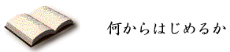

|
 |
|
青空文庫の棚揃えは、二筋から進めようと思います。 一つ目は、著作権の保護期間を過ぎた作品の電子化です。 日本の著作権法は、保護期間を作者の死後五十年と定めています。 夏目漱石はもちろん、宮沢賢治もすでにこの年限を終えています。１９９９年１月には、太宰治も対象から外れます。 これら共有の財産として自由に分かち合えるようになった作品を、出版社の商品を買うことでしか味わえないのは、いかにも不自由です。 誰かが一度電子化の作業をにない、後はみんなで自由に読み回すほうが、よほど健全でしょう。 加えて二つ目に、書き手自身が「対価を求めない」と決めた作品を、募っていきたいと思います。 いったんは本になりながら、絶版となったもの。さまざまな事情で、書籍になれなかった原稿。それら、紙の世界では恵まれなかった作品にも、「読まれたい」とする書き手の願いはなお、生きているでしょう。 電子本というもう一つの道を選べば、その思いを蘇らせ、すぐにも形に仕立てることができるのです。 新しい創作の舞台として、はじめから電子本を選ぶ書き手もいるでしょう。リンクを活用した、電子本ならではの、まったく新しい試みも期待できます。 書き手自身が開こうと決めるなら、私たちはその作品がより多くの読み手と出合えるよう、後押ししたいと思います。 |
| 前にもどる トップページへ 続きを読む |